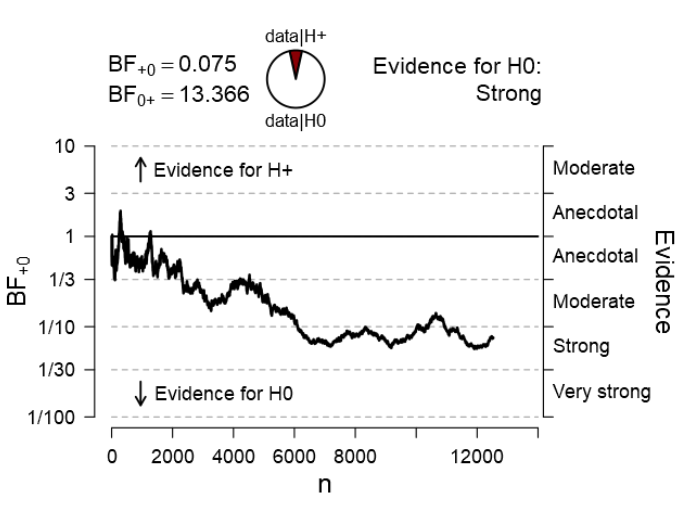
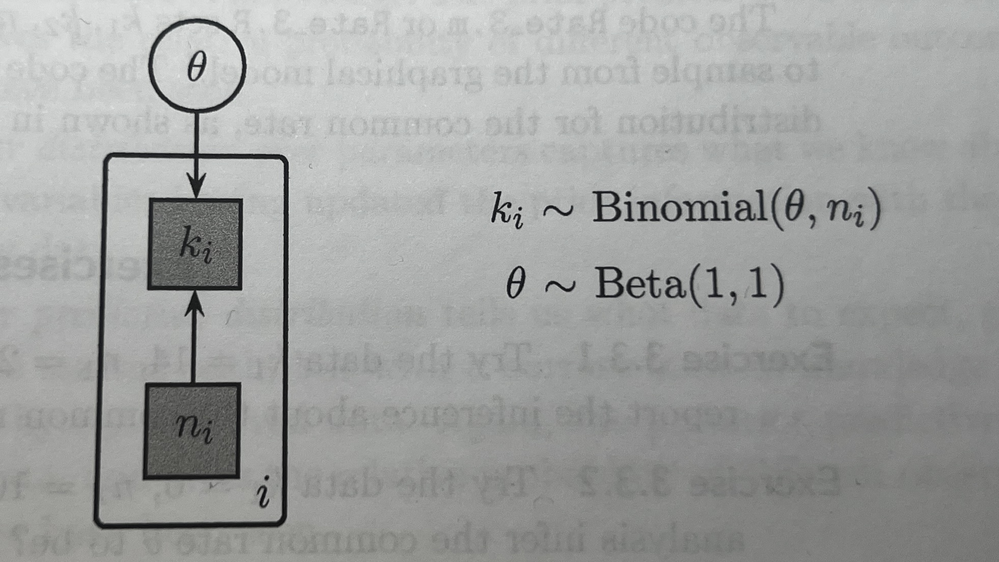
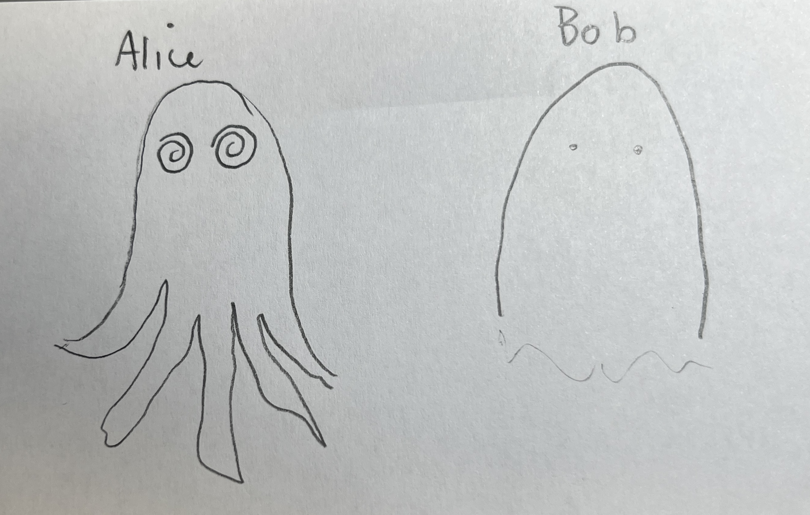
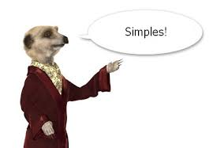

Bayesian Models of Brains, Minds, & Behaviors DRCMR · Copenhagen · May 2025 Ollie Hulme · David Meder · Janine Bühler · Melissa Larsen
Amin Kangavari · Simon Steinkamp · Naiara DemnitzLecture 1: Preamble & housekeeping
Roadmap
- What this course is about
- Materials: GitHub, Binder, Book…
- Schedule, social, and how the week works
- Group project
- Vibe & expectations
How the week will go
- A mix of lectures, interactive demos, case studies, discussion & group work
- You’ll build and present a research project with your group
- Lectures & demos lay the conceptual groundwork
- You build the research project sequentially as you learn more
- Morning - lectures and demos
- Afternoons - self-paced demos and/or group work
Materials
- GitHub: slides, code, schedule, everything…
- Binder: run interactive notebooks in browser, no install
- Book: key reference, especially early in the week
- Important links: GitHub
README.md
GitHub
Main hub for slides, code, notebooks, and schedule etc.
link in footer üëá

Binder
Launch notebooks in your browser
No installation needed
Be patient — it takes time to load
Keep your Binder tab open
It can time out so best to use continuously in longer sessions

Book
- Core reference for models & theory
- This course roughly goes through it in order
- Especially useful Mon–Wed

Schedule
- Each day blends concepts, demos, & group work
Schedule
- Up to date on GitHub
- Note different room on wed & thurs

Course overview
- Basic modelling → Get started (Mon-Tues)
- Intermediate modelling → Go deeper (Wed)
- Neural data integration → Link models to brain (Thurs)
- Group project → Model, analyze, present (Fri)
Course schematic
- Your group project will follow this workflow
Group project
- Form a small group
- Pick a cognitive question
- Design an experiment (behavioral + neural)
- Build models to test your hypotheses
- Present your work on Friday (~15 min)
- See google doc on the Github README
Supervision & Support
- Janine: talk to her if you are shy to ask in class
- Ollie & David: logistics, organisation, schedule
- Simon: anything technical, Binder, GitHub, Python
- Group work: you will have many supervisors depending on the day
Our expectations of you
- Ask questions — don’t nod and fake it
- Disrupt — curiosity is good
- You deserve to understand this
Things we love to hear
- “I might have missed this, but…”
- “Can I ask a stupid question?”
- “Do you have an intuition for why…”
- ‚ÄúI‚Äôm confused‚Äù ü§î
Things not to do to yourself
- Don’t pretend to get it
- Don’t assume you’re the only one confused
- Don’t sit in silence out of self-doubt
Overarching aim
- Use probability theory to explain minds, brains, and behavior
- Upgrade your scientific reasoning
- Simple: intuitive, powerful tools
- Universal: same ideas apply across science
- From description → explanation
Specific aims
- Build and test cognitive models
- Link cognitive models to neural data
- Be hands-on, interactive, exploratory
Upcoming lectures
- Basics of Bayesian thinking
- Modeling cognition as a binary process
- Modeling mixtures of processes
- Selecting models
- Bayes factors and posterior odds
Lecture 2: Bayesian basics
Roadmap
- The spirit of Bayesian thinking
- What is Bayesian modeling?
- Principles of Bayesian inference
- Observable vs. latent variables
- Beliefs and evidence
- Estimation methods
- Why Bayesian methods?
The spirit of Bayesian thinking
- “Probability theory is nothing but common sense reduced to calculation.” — Laplace (1814)
- “The rules of probability are the rules of consistent reasoning.” — Jaynes (2003)
- “Bayesian methods are not a special brand of inference; they are the only logically consistent rules for inference that are known.” — Jaynes (2003)
Laplace (1814); Jaynes (2003)
Bayesianism as the calculus of common sense
- Bayesianism is just probability theory applied to inference. — Jaynes (2003)
Jaynes (2003)
Probability as rational consistency
- Bayesian modeling follows the rules of probability.
- Probability is logic.
- Logic is consistency.
- Consistency is rationality.
- And rationality is just thinking clearly.
So what is “Bayesian Modeling of Minds, Brains, and Behavior”?
- This course is about thinking clearly about minds, brains, and behavior.
- It’s about testing theories rationally, using the evidence provided by data.
- Bayesian modeling offers a principled, rational way to update beliefs based on evidence.
- Ta-da!
Bayesian Updating in a Nutshell
- Prior belief → Evidence → Posterior belief
- Thats it.
A cognitive task
- The go-nogo task

- You respond (Go) to frequent stimuli…
- …and withhold response (No-Go) to infrequent ones.
- Measures response inhibition, impulse control, and attention.
- Commonly used in motor neuroscience / ADHD / addiction / tests of frontal lobe function…
Estimating ability from behavioral data
- 10 trials of equal difficulty
- Binary outcomes, correct or incorrect
- We want to estimate ability \(\theta\) from behavior
- \(\theta\) is latent which means it is hidden
- Data are observed which means we can see it
- e.g., correct responses \(k = 8\) out of \(n = 10\)
- We will use the same symbols & letters throughout
Latent vs. observed

Why latent variables?
- We want to explain, not just describe
- Descriptive: e.g. “What did the subject score?”
- Explanatory: e.g. “What ability caused that score?”
Scientitific questions pertain to the latent
- Do parkinsons patients differ in risk taking on and off medication?
- Does serotonin change empathy?
- Does alpha waves cause memory consolidation?
- Does ozempic improve cognitive flexibility?
Science cares about the latent
- We observe data, but we want to infer about latent variables
- Cognitive & brain sciences are ultimately about latent variables
- Bayesian modeling connects observables to latent processes
Back to go-nogo
- Observed: behavior → number correct \(k/n\)
- Latent: ability → \(\theta\)
- There is always uncertainty
- The same ability can result in different behavior
- Different ability can result in the same behavior
- Bayesian inference accounts for this uncertainty
Beliefs as Distributions
- Probability distributions encode beliefs
- The center = most likely value
- The spread = uncertainty
notebooks/probability_distributions.ipynb- see “Beliefs as distributions”
Probability mass functions for discrete variables

- Total mass sums to 1: \(\sum_x p(x) = 1\)
- Range sums: \(p(2 \leq x \leq 4) = 0.4\)
- Odds: \(\frac{p(5)}{p(7)} = 7\)
Probability density functions for continuous variables

- All probability density integrates to 1
- (area under the curve is 1)
- Densities can exceed 1
- Ratios make sense: The value “5.5” is 5 times less likely than “0.7”
Probability Density Functions for continuous variables
- Total area under curve: \(\int p(x)\,dx = 1\)
- Densities can > 1, but only area matters.
- Likelihood ratios make sense: e.g., \(p(5.5)/p(0.7) = 1/5\)
Interpreting probability distributions
- It’s important to read and reason with probabilty distributions.
notebooks/probability_distributions.ipynb- see “Interpreting probability distributions”
Bayes’ rule
- \(p(\theta \mid D) = \frac{\color{red}{p(D \mid \theta)} \cdot \color{blue}{p(\theta)}}{\color{green}{p(D)}}\)
- Posterior = \(\frac{\color{red}{\text{Likelihood}} \cdot \color{blue}{\text{Prior}}}{\color{green}{\text{Marginal likelihood}}}\)
- \(\theta\) is a parameter, here “ability” on go-nogo task
- \(D\) is data, here it is the correct performance, \(k\) successes out of \(n\) trials
- This tells us how our beliefs about ability are updated by the evidence provided by the data.
Prior
- \(p(\theta \mid D) = \frac{\color{red}{p(D \mid \theta)} \cdot \color{blue}{p(\theta)}}{\color{green}{p(D)}}\) \(\text{Posterior} = \frac{\color{red}{\text{Likelihood}} \cdot \color{blue}{\text{Prior}}}{\color{green}{\text{Marginal likelihood}}}\)
- \(\color{blue}{\text{Prior}}\) is what we believe about \(\theta\) before seeing the data.
- It reflects our prior assumptions or knowledge.
Likelihood
- \(p(\theta \mid D) = \frac{\color{red}{p(D \mid \theta)} \cdot \color{blue}{p(\theta)}}{\color{green}{p(D)}}\) \(\text{Posterior} = \frac{\color{red}{\text{Likelihood}} \cdot \color{blue}{\text{Prior}}}{\color{green}{\text{Marginal likelihood}}}\)
- \(\color{red}{\text{Likelihood}}\) is the probability of data \(D\) given a value of \(\theta\).
- It tells us how well each \(\theta\) explains the data
- It also tells us how to update our beliefs about each value of \(\theta\)
- Higher likelihood → stronger belief in \(\theta\)
- Lower likelihood → weaker belief in \(\theta\)
Marginal likelihood
- \(p(\theta \mid D) = \frac{\color{red}{p(D \mid \theta)} \cdot \color{blue}{p(\theta)}}{\color{green}{p(D)}}\) \(\text{Posterior} = \frac{\color{red}{\text{Likelihood}} \cdot \color{blue}{\text{Prior}}}{\color{green}{\text{Marginal likelihood}}}\)
- \(\color{green}{\text{Marginal likelihood}}\) is the total probability of the data averaged over all possible values of \(\theta\).
- It represents how good the model is at predicting the data.
- (It also normalizes the posterior so it is a valid probability distribution)
Posterior
- \(p(\theta \mid D) = \frac{\color{red}{p(D \mid \theta)} \cdot \color{blue}{p(\theta)}}{\color{green}{p(D)}}\) \(\text{Posterior} = \frac{\color{red}{\text{Likelihood}} \cdot \color{blue}{\text{Prior}}}{\color{green}{\text{Marginal likelihood}}}\)
- Posterior is what we believe about \(\theta\) after seeing the data.
- It’s the prior that has been updated by the evidence provided by the data.
Recap in context of go-nogo
- The prior is our prior belief about ability \(p(\theta)\)
- The likelihood is how likely the behavior is under each ability \(p(data|\theta)\)
- The posterior is our new belief about ability after observing the behavior \(p(\theta|data)\)
- The marginal likelihood is how good in general this model predicts the behaivor \(p(data)\)
Updating beliefs with data
- We start with a prior belief \(p(\theta)\)
- Observe data: e.g. ( k = 9 ) correct out of ( n = 10 )
- Bayes updates the belief:
- \(p(\theta \mid D) = \frac{\color{red}{p(D \mid \theta)} \cdot \color{blue}{p(\theta)}}{\color{green}{p(D)}}\)
Intuition behind belief updating
- The more likely the data is for a given \(\theta\)
- The more we believe in that value of \(\theta\) after seeing the data.
- The values of \(\theta\) that are better supported by the data, are more believed in after experiencing the data
- We have updated our beliefs according to the data
Proportional form of Bayes rule
- Since:
\(p(\theta \mid D) = \frac{\color{red}{p(D \mid \theta)} \cdot \color{blue}{p(\theta)}}{\color{green}{p(D)}}\) - The \(\color{green}{\text{Marginal likelihood}}\) \(\color{green}{p(D)}\) doesn’t depend on \(\theta\)
- So we can rewrite as:
- \(p(\theta \mid D) \propto \color{red}{p(D \mid \theta)} \cdot \color{blue}{p(\theta)}\)
- \(\text{Posterior} \propto \color{red}{\text{Likelihood}} \cdot \color{blue}{\text{Prior}}\)
- “Posterior is proportional to likelihood times prior””
Prior beliefs for theta
notebooks/probability distributions.ipynb- see “Prior beliefs for theta”
Multiplying prior and likelihood
notebooks/probability distributions.ipynb- see “Multiplying prior and likelihood”
Is the likelihood a probability distribution?
notebooks/probability distributions.ipynb- see “Is the likelihood a probability distribution?”
- It is if you plot it appropriately.
- e.g \(p(data|theta=0.5)\)
- It is if you plot it over the data rather than theta
Summarising the posterior
notebooks/probability distributions.ipynb- see “Bayesian credibility intervals”
- see “Summarising the posterior”
Compute the posterior for the beta
- Here is an easy way to calculate the posterior
- We start with a flat prior: \(p(\theta) \sim \text{Beta}(1,1)\)
- Observe some data - \(k\) = correct, \(n\) = total trials
- Posterior is then: \(p(\theta \mid D) \sim \text{Beta}(1 + k, 1 + n - k)\)
- Simple, tractable update rule for binary outcomes
notebooks/probability distributions.ipynb- see “Computing posterior for the beta”
Sequential updating of posterior
- Bayesian inference is consistent across steps
- One-step:
- Prior → Combined data1 & data2 → Posterior
- Two-step:
- Prior → Data1 → Intermediate Posterior → Data2 → Final Posterior
- Final result is identical
notebooks/probability distributions.ipynb- see “Sequential updating”
Why sequential updating of posterior matters
- You can peak at your data, it’s ok!
- Enables inference as data rolls in.
- Optional stopping: stop early, or extend data collection
- Efficient: time, money, resources
- Ethical: minimises animals, humans, unnecessary treatment etc.
Optional stopping
- 
Frequentist methods don’t allow this
- Frequentist inference assumes a fixed sample size and plan
- Stopping early or collecting more data invalidates p-values
- Counterfactual policies: what you would have done, if the data had turned out different impacts on your p-values.
- Not widely understood.
Conjugate priors
- If Prior and posterior from the same distribution family → conjugate
- For example:
- \(p(\theta): \text{Beta}(\alpha, \beta)\)
- \(p(\theta|data): \text{Beta}(\alpha + k, \beta + n - k)\)
- The posterior can be computed by plugging data directly into an equation
- Conjugacy allows for analytic updates
When conjugacy isnt possible: Sampling
- Conjugacy is relatively rare in real world cases
- In cases where conjugacy is not available sampling solutions are possible
- Commonly MCMC - Markov Chain Monte Carlo
- Works even when no closed-form solution
- Approximates the posterior via sampling
Analytic vs. Sampling
- Analytic: Exact, requires conjugacy, rare
- MCMC: Approximate, doesnt require conjugacy, more flexible, common
MCMC in Practice
- Red pill: Learn how MCMC really works ü§ì
- Intuitive guide to MCMC internals
- Metropolis-Hastings explained simply
- These methods will keep evolving — expect newer algorithms, faster sampling, and better approximations.
- Intuitive guide to MCMC internals
- Blue pill: Trust the method and use it (but know how to spot when it‚Äôs broken) üòÑ
- We’ll demonstrate and visualise MCMC in practice.
MCMC demo
- An easy way to sample the posterior.
- With enough samples you can get as close to the true posterior as you want.
- Works for conjugacy cases too.
- Go to “MCMC”
notebooks/probability distributions.ipynb
Why Bayesian Methods?
- Principled reasoning: Probabilistic logic = consistent thinking
- Uncertainty-aware: Fully models uncertainty
- Latent variables: Model hidden causes, not just outcomes
- Sequential updating: Updating is the same whether data is sequential or all-in-one-go.
- Explanations: From describing data to explaining via theory
- Flexibility: Hierarchical, generative, extensible
- Simple: Same principle always. Learn it once. Apply it forever.
Lecture 3: Modeling a Binary Process
Roadmap
- Cogntive tasks with binary outcomes
- From observed data to hidden probabilities
- Graphical models and their notation
- Bayesian inference via sampling in JAGS
- Convergence diagnostics and posterior checks
Modeling a Binary Process
- Start simple: focus on binary outcomes
- e.g., Success/Failure, Correct/Incorrect, Yes/No
- Common examples:
- coin flips, true/false questions, detection tasks, motor responses
- In our go/no-go example, each of the \(n\) trials results in either \(k\) successes
- Binary processes are foundational for modeling cognition
Getting Started
- Our goal is to infer ability in a go-no-go task
- We estimate a rate — the hidden probability \(\theta\) that a response is correct
- We represent our uncertainty about \(\theta\) as a probability distribution
- Many cognitive tasks can be modeled this way
Binary Tasks in Cognitive Science
- Go/no-go, stop-signal, 2AFC, task switching
- Recognition memory, Stroop, Flanker, oddball detection
- Visual search, discrimination tasks, and so on.
From Binary Outcomes to a Hidden Rate
- Observe \(k\) successes in \(n\) trials → compute \(\frac{k}{n}\)
- But our interest is in the underlying success rate \(\theta\)
- Model: \(k \sim \text{Binomial}(\theta, n)\)
- \(p(k \mid \theta, n) = \binom{n}{k} \theta^k (1 - \theta)^{n - k}\)
- For a given \(\theta\) and \(n\), this is the probability distribtion for \(k\)
- Assumes independent, identically distributed (i.i.d.) trials — no history effects
Try it Yourself
notebooks/probability distributions.ipynb- see “Binomial distribution”
Graphical Models
- Graphical models represent probabilistic structure visually
- Nodes represent variables; edges represent dependencies
- Child nodes are conditionally dependent on parent nodes
- This is a simple model of the go-nogo task:


Graphical Notation
- Circular nodes: continuous variables
- Square nodes: discrete variables
- Shaded nodes: observed
- Unshaded nodes: hidden
- Single border: stochastic variable
- Double border: deterministic relationship derived from others
Graphical Notation Reference

Graphical Model Quiz

- Upper node: What type of variable is this?
- Answer: Continuous, stochastic, and observed
- Lower node: What type of variable is this?
- Answer: Discrete, deterministic, and unobserved

Sampling via JAGS
model { # Define the model
theta ~ dbeta(1,1) # Prior: theta follows a uniform beta distribution
k ~ dbin(theta,n) # Likelihood: k follows a binomial distribution
# with parameters theta and n
} # End of modelInterpreting the graphical model for the code

- Theta is latent, and continuous
- n is observed and discrete
- k is observed and discrete
- Both feed n and k feed in to the likelihood to generate k
R-hat as a convergence check
- It’s important to check that the sampling has converged to the stationary distribution.
- One heuristic is the R-hat statistic:
\(\hat{R} = \frac{\text{var}(\text{within-chain})}{\text{var}(\text{across-chain})}\) - Rule of thumb: \(\hat{R}\) should be between 1.00 and 1.01 for convergence.
Inspecting the chains
- the chains of samples should look like hairy catapillars
- like this:
Try it yourself
- go to “MCMC convergence checks**
- üìÇ
notebooks/probability distributions.ipynb
Difference between two rates
- Suppose we observe two processes, each producing successes out of trials:
- Process 1: \(k_1\) successes out of \(n_1\) trials
- Process 2: \(k_2\) successes out of \(n_2\) trials
- We assume each is governed by a different underlying rate: \(\theta_1\) and \(\theta_2\).
Estimating the difference
- We want to model each rate with a posterior Beta distribution, and we are interested in the difference:
- \(\delta = \theta_1 - \theta_2\)
- This tells us how much more (or less) likely success is in one group compared to the other.
Examples and intuition
- Examples:
- üìà Effect of a drug on performance (\(\theta_1\) = treated, \(\theta_2\) = control)
- üë∂ Performance difference between age groups
- üß™ Comparison of two algorithms on success rate
- A positive \(\delta\) means group 1 is better; a negative \(\delta\) means group 2 is better.
Graphical model for inferring differences
- Why is delta double boundary?
- Because it is completely determined by the two thetas
JAGS code for infferring differences in rates
Try it yourself
- go to “Inferring the difference between two rates”
notebooks/probability distributions.ipynb
Interpret the posterior
- What is the approximate probability that the difference in rates (\(\delta\)) is below 0?
Inferring a common rate
- In some cases we want to infer a common rate for 2 different processes
- e.g. same subject & task, two different sessions
- e.g. same group, different subjects
- e.g. same subject, different tasks
- Here we would model a single \(\theta\)
Same model with plate notation
- 
- note only one theta, but multiple processes indexed by i
JAGS code for inferring a common rate
- Only one \(\theta\) is modelling the two sets of data \(k1\) and \(k2\)
Try it out
- go to “Inferring a common rate”
notebooks/probability distributions.ipynb
Predictions
- In Bayesian modeling, everything is about prediction.
- There are two fundamental axes:
- Are we predicting parameters or data?
- Are we predicting before or after observing data?
Different types of prediction
| Before data | After data | |
|---|---|---|
| Parameters | Prior distribution: \(p(\theta)\) | Posterior distribution: \(p(\theta \mid d_{\text{obs}})\) |
| Data | Prior predictive distribution: \(p(d_{\text{new}})\) | Posterior predictive distribution: \(p(d_{\text{new}} \mid d_{\text{obs}})\) |
Predicting parameters
- The prior distribution \(p(\theta)\) is our prediction about the parameter before seeing data.
- The posterior distribution \(p(\theta \mid d_\text{obs})\) is our updated prediction after observing data.
Predicting data.
- The prior predictive distribution \(p(d_{\text{new}})\) tells us what data we expect based on our prior belief about \(\theta\).
- The posterior predictive distribution \(p(d_{\text{new}} \mid d_{\text{obs}})\) predicts new data based on our updated belief.
Todays posterior is tomorrows prior
- This means that any posterior can always become a prior for a future prediction, and so on.
Prior and posterior prediction
model {
# Prior distribution
thetaprior ~ dbeta(1,1)
# Prior predictive distribtion
priorpredk ~ dbin(thetapior,n)
# Posterior distribution
theta ~ dbeta(1,1) # theta becomes the posterior distribution of
k ~ dbin(theta,n) #likelihood for updating prior to posterior
# Posterior predictive distribution
postpredk ~ dbin(theta,n) # posterior predictive distibution
}Samples of the four distributions
- Prior and posterior distributions are in the space of the parameter
- Prior and posterior predictive distributions are in space of the data k out of n trials.
Comparing data to the posterior predictive distribution
- If we estimate the model along with its predictive distributions
- We can see how this compares to the actual data
Descriptive adequacy
- …means how well does the model describe the data
- Posterior for this data: k1 = 0, n1 =10 & k2=10, n2 = 10
- Looks ok, but does it have descriptive adequacy?
Check posterior predictive distribution against data
- X marks the observed data, square size indicates probability
- The model has poor descriptive adequacy. Why?
- Its a common rate model, so it predicts the same rate, but the data clearly is better modelled with different rates.
Prediction forward and backward in time
- Prediction usually targets the future — but can also fill in the past
- When data are missing, we infer what might have happened
- Cognitive models use observed data to uncover hidden causes of past behavior
- Inference helps us predict both outcomes and hidden history
- Bayesian inference works backwards and forwards in time
Latent mixture models
- What are they?
- How to use them to model mixtures of cognitive processes or traits
- How to use them to model compare models
Latent mixture models
- …allow you to model data as coming from a mixture of latent processes.
- This could be a mixture of cognitive processes, e.g. guessing and trying, attending and not attending, remembering and forgetting.
- Or mixture of states or traits, e.g. depresssed vs. healthy, parkinsons vs. healthy, sleepy vs. awake
- An indicator variable estimates which mixture of processes generated the data.
- You can also use these mixture models to compare different models
Example: Latent mixture model of cognitive test
- “Tryers” have an ability that determines their rate of correct responses.
- “Guessers” score at chance level (e.g. 50%).
- Each participant belongs to one of the two groups.
- An indicator variable \(z_i\) models guesser or tryer.
Latent mixture model vs. simpler model

- Its the same model, \(z\) just allows a mix of two different processes that can set the rate \(\theta\).
- Simples.

Latent mixture graphical model
- \(z_i\) is an indicator variable for participant \(i\).
- \(z_i = 0\) → guesser; \(z_i = 1\) → tryer.
- \(\psi = 0.5\) is the known chance performance level.
- \(\phi\) is the tryer’s ability (same as \(\theta\)).
- Posterior of \(z\) tells us the probability of each subject being either a guessers vs. a tryer.
JAGS code for latent mixture
Interactive demo
notebooks/probability distributions.ipynb- Let’s simulate data first
- go to “Simulate guessers and tryers”
- Then we can run inference on each subject
- go to “Infer guessers and tryers”
Model selection
- Why we need to compare models
- Simplicity vs. complexity
- Marginal likelihood as a comparison tool
- Predictive performance and prior bets
- Bayesian model comparison intuition
Why compare models?
- Exept for the last section, we’ve mainly focused on single models
- Science advances by comparing competing explanations
- “This theory is good” → compared to what?
- We want to know which theory explains the data better
- This requires comparing models
Simplicity vs. complexity
- “Explain phenomena by the simplest hypothesis that works” — Ptolemy
- “Avoid unnecessary plurality” — Occam’s razor
- “Complexity must pay for itself” — Hinton
- “Minimize free energy” — Friston
- These ideas all reflect the same principle: balance fit and complexity
The Bayesian solution
- Many methods try to balance fit and complexity
- Bayesian methods do it naturally
- Bayes gives us a single number for model quality: marginal likelihood
- It rewards accuracy…
- …and penalizes wasted complexity
Conditioning on a model
- Bayes’ rule always assumes a model
- But we can easily imagine different models, with different priors or structures
- Science is filled with competing explanations and models after all
- We now ask: which model better predicts the data?
- This leads us to the marginal likelihood
- It’s the probability of the data, given the model
Marginal likelihood
- \(p(D \mid M)\) = average predictive performance of model \(M\)
- It’s a single number:
- How well the model predicted the data, on average
- It accounts for all parameter values, weighted by their prior
Analogy to betting
- Think of it like your model is betting on which parameter values best predict the data
- The better your bets, the higher your model’s score
- The prior is the placing of the bets, and the marginal likelihood is how good those bets paid off.
Marginal likelihood in words
- How probable was the data under this model \(M\)?
- Did the model concentrate its predictions where the data actually were?
- Priors spread out predictive mass
- Bad priors waste predictions on wrong areas
- Good priors focus predictions where the data land
Octopus example
- There are two
octopioctopusses. - Both claim to be paranormal.
- It’s 1970, so they are both working for the CIA
- 
Octopus predictions
- Where is the Russian sub?
- Alice: northern hemisphere
- Bob: Baltic Sea
- Data: Off the coast of Stockholm
- Alice was vaguely right
- Bob was more precisely right → higher marginal likelihood
How is marginal likelihood calculated?
- It’s the expected likelihood under the predictions of the prior:
- \(p(D \mid M) = \int p(D \mid \theta, M)\, p(\theta \mid M)\, d\theta\)
- For discrete parameters:
- \(p(D \mid M) = \sum p(D \mid \xi_i)\, p(\xi_i)\)
- It’s a weighted average across all parameter settings
Try it out
- Lets compare alice and bob
notebooks/probability distributions.ipynb- “Compare octopusses via marginal likelihood”
Worked example
- Suppose a model has three parameter values: \(\theta = \{0, 0.5, 1\}\)
- Prior probabilities: \(p(\theta_1) = \color{blue}{0.6}\), \(p(\theta_2) = \color{blue}{0.3}\), \(p(\theta_3) = \color{blue}{0.1}\)
- Likelihoods: \(p(D \mid \theta_1) = \color{red}{0.1}\), \(p(D \mid \theta_2) = \color{red}{0.4}\), \(p(D \mid \theta_3) = \color{red}{0.6}\)
- Marginal likelihood:
\(p(D) = \color{blue}{0.6} \cdot \color{red}{0.1} + \color{blue}{0.3} \cdot \color{red}{0.4} + \color{blue}{0.1} \cdot \color{red}{0.6}\) - Step by step:
\(= \color{gray}{0.06} + \color{gray}{0.12} + \color{gray}{0.06} = \boxed{0.24}\)
Complexity and spread
- More complex models spread their predictions widely
- This lowers the average likelihood
- Even if they include the truth, they may assign low probability to it
- Marginal likelihood punishes this
- Broad priors = wasted predictions = lower score = lower marginal likelihood
Complexity is not just parameter count
- A model with many narrow priors can be simple
- A model with one vague prior can be complex
- Complexity = how broadly a model spreads its predictions
- Narrow predictive distributions = simpler models
- Wide, uncertain predictions = complex models
Misconception - sidenote
- AIC, BIC penalize complexity by counting parameters
- But parameter count ≠ true complexity
- Complexity = how broadly a model spreads its predictions
- Bayesian marginal likelihood captures this automatically
Example: prior vagueness
- \(\theta \sim \text{Uniform}(0,1)\) → vague → complex
- \(\theta \sim \text{Uniform}(0.5,1)\) → tighter → simpler
- Both models have one parameter
- But they differ in how much of the prediction space they cover
- Complexity depends on how much ground a model tries to cover
Example: prior vagueness
Why marginal likelihood matters
- It’s the most important quantity in Bayesian model comparison
- It unifies inference in brain, behavior, science
- Maximizing it means best average predictive performance
- It is the quantity that arguably everything else is trying to approximate: variational Bayes, free energy minimisation, ELBO, predictive coding, predictive processing
Why marginal likelihood matters
- Can even argue it is a unique universal maximandum for all physical and adaptive systems
- Woah man, that’s like, deep.
- üòµ‚Äçüí´
The Bayes factor
- Compared to what?
- From marginal likelihood to relative evidence
- Interpreting Bayes factors
- Worked example: guessing vs. non-guessing
- Pitfalls and philosophical notes
Why compare models?
- A model with high marginal likelihood is good — but only relative to alternatives
- Absolute goodness is rarely meaningful on its own
- The key question is: compared to what?
- We want relative evidence — which model explains the data better
- The Bayes factor gives us that answer
Compared to what?

Set a compared-to-what alarm in your brain
- Listen out for one-sided superiority / inferiority claims
- “this theory explains…”
- “this model predicts the data poorly…”
- “this data is unlikely under the null hypothesis…”
- Ding! → Compared to what?
Bayes factor definition
- Marginal likelihood: average predictive performance of a model
- Bayes factor compares this between two models
- Defined as the ratio of marginal likelihoods:
\(BF_{\color{blue}{1} \color{red}{2}} = \frac{p(D \mid \color{blue}{M_1})}{p(D \mid \color{red}{M_2})}\)
- Quantifies how much more likely the data is under \(\color{blue}{M_1}\) than \(\color{red}{M_2}\)
We already plotted Bayes factors
- Sneakly i didnt tell you they were bayes factors.
Interpreting the Bayes factor
- \(BF_{12} > 1\) → data favors \(M_1\)
- \(BF_{12} < 1\) → data favors \(M_2\)
- \(BF_{12} = 5\) → data is 5× more likely under \(M_1\)
- \(BF_{12} = \frac{1}{5}\) → data is 5× more likely under \(M_2\)
- Strength of evidence depends on how far from 1 the ratio is
Jeffreys’ scale
| \(BF_{12}\) | Interpretation |
|---|---|
| >100 | Extreme evidence for \(M_1\) |
| 30–100 | Very strong evidence for \(M_1\) |
| 10–30 | Strong evidence for \(M_1\) |
| 3–10 | Moderate evidence for \(M_1\) |
| 1–3 | Anecdotal evidence for \(M_1\) |
| 1 | No preference |
| 1/3–1 | Anecdotal evidence for \(M_2\) |
| 1/10–1/3 | Moderate evidence for \(M_2\) |
| 1/30–1/10 | Strong evidence for \(M_2\) |
| 1/100–1/30 | Very strong evidence for \(M_2\) |
| <1/100 | Extreme evidence for \(M_2\) |
Try it out
- see “Bayes factor scale interpretation”
notebooks/probability distributions.ipynb
Example: guessing vs. non-guessing
- 9 out of 10 trials correct → \(k = 9\), \(n = 10\)
- \(M_1\): unknown ability → \(\theta \sim \text{Uniform}(0,1)\)
- \(M_2\): guessing → \(\theta = 0.5\)
- Compute marginal likelihood under each model
- Compare with a Bayes factor
Bayes factor calculation
- For \(M_1\): \(p(D \mid M_1) = \frac{1}{1+n} = \frac{1}{11} \approx 0.0909\)
- For \(M_2\): \(p(D \mid M_2) = \binom{10}{9} (0.5)^{10} = 10 \cdot 0.000976 = 0.0098\)
- Bayes factor:
\(BF_{12} = \frac{0.0909}{0.0098} \approx 9.3\)
- Data is about 9× more likely under \(M_1\) than \(M_2\)
Try it out
- see “Bayes factor calculation step by step”
notebooks/probability distributions.ipynb
Flipping the BF
- If \(BF_{12} < 1\)…
- …take the reciprocal: \(BF_{21} = \frac{1}{BF_{12}}\)
- Keeps interpretation intuitive: how many times more likely is the data?
- Example: \(BF_{12} = 0.2\) → \(BF_{21} = 5\)
- Now we say: data is 5 × more likely under \(M_2\)
- Same info, more digestible
Bayes vs. Fisher
- Bayes compares models
- Fisherian methods tests a single null hypothesis
- p-values ask: “how unlikely is this data under \(H_0\)?”
- Bayes factors ask: “which model better explains the data?”
- Evidence is always comparative: \(p(\text{data} \mid \text{A})\) vs. \(p(\text{data} \mid \text{B})\)
Critiques
Criticism: Bayes factors are sensitive to prior choice
Answer: This is a feature — priors are part of the model.
Criticism: But I don’t want my conclusions to depend so much on the prior
Answer: Then use sensitivity analysis to check robustness.
Criticism: BFs be high if one bad model is much worse than another
Answer: True. Check descriptive adequacy — look at posterior predictive distributions, simulate data, or compare out-of-sample predictions.
The arc of civilisation
Oppposable thumbs, fire, the wheel, writing, zero, the printing press, Newtonian physics, germ theory, the steam engine, the combustion engine, the Moon landing, In Rainbows, the internet, CRISPR, Bayes factors
I’m being satirical (kinda).
Lecture 7 Model probabilities
Roadmap
- Model probabilities
- Prior model probability
- Marginal likelihood
- Posterior model probability
- Odds and model comparison
- From prior odds to posterior odds
- Conceptual and computational challenges
Model probabilities
- Often we want to know which model to believe in
- As Bayesians, we assign prior probabilities to models
- Then update these into posterior model probabilities
- Updating is based on how well each model predicts the data
Prior model probability
- Assign prior probabilities to models: \(p(m_1)\), \(p(m_2)\) …
- Reflects belief before seeing any data
- Must sum to 1 across the model space \(M\)
- Can be informed by prior knowledge or data…
- …or set uniformly if agnostic
Marginal likelihood
- Measures average predictive performance of a model
- e.g. for a model \(m_1\):
- \(p(D \mid m_1) = \int p(D \mid \theta, m_1)\,p(\theta \mid m_1)\,d\theta\)
- Rewards models that predict the data well
- Penalizes models that spread probability too widely
Posterior model probability
- Probability of model after seeing data
- Bayes’ rule for models:
- \(p(m_1 \mid D) = \frac{p(D \mid m_1)\,p(m_1)}{p(D \mid M)}\)
- Note: The denominator is the marginal likelihood of the model space:
- \(p(D \mid M) = \sum_{m \in M} p(D \mid m)\,p(m)\)
Posterior model probability
- Probability of model after seeing data
- Bayes’ rule for models:
- \(p(m_1 \mid D) = \frac{p(D \mid m_1)\,p(m_1)}{p(D \mid M)}\)
- Note: The denominator is the marginal likelihood of the model space \(M\):
\[ p(D \mid M) = \sum_{m \in M} p(D \mid m)\,p(m) \]
Odds
- Odds express the ratio of one probability relative to another
- If probability of success is p = 0.75
- …and probability of failure is then p = 0.25 then:
\(\text{odds} = \frac{0.75}{.25} = 3\)
- “Three to one” odds means success is three times more likely than failure
Prior odds
- Compares plausibility of two models before seeing data
- Defined as: \(\text{Prior odds} = \frac{p(m_1)}{p(m_2)}\)
- Encodes how much you believe in \(m_1\) relative to \(m_2\) a priori
Posterior odds
- Compares plausibility of two models after seeing data
- Defined as: \(\text{Posterior odds} = \frac{p(m_1 \mid D)}{p(m_2 \mid D)}\)
- Reflects relative belief in one model over another after the data
From prior odds to posterior odds
- Bayes’ rule for model comparison (in odds form):
- \[
\frac{p(m_1)}{p(m_2)} \times \frac{p(D \mid m_1)}{p(D \mid m_2)} = \frac{p(m_1 \mid D)}{p(m_2 \mid D)}
\]
- Prior odds × Bayes factor = Posterior odds
Simples!
- 
Posterior odds example
Posterior odds schematic
Try it out
- Demo brings it all together
- See:
notebooks/probability distributions.ipynb
→ “Posterior odds calculation”
Conceptual and computational challenges
- Priors affect inference — vague ≠ safe
- Marginal likelihoods are often hard to compute
- Complex models often need approximations
Specifying model priors
- Model priors should reflect genuine uncertainty
- Two strategies:
- Subjective (expert-informed)
- Objective (e.g., unit-information)
- Subjective (expert-informed)
- Objective priors support reproducibility
- Subjective priors offer flexibility when justified
Common confusion about priors
- Model priors ≠ parameter priors
- Be clear what you are talking about with “priors”
What priors influence what
- Model priors → Prior odds
- Since prior odds are composed of model priors
- Parameter priors → Bayes factor
- Parameter priors infuence how good each model predicts data
- Both model AND parameter priors → posterior odds
- Since Posterior odds = prior odds BF*
Prior sensitivity
- Different priors can lead to different conclusions based on the posterior
- This is not a flaw — it’s a feature of honest uncertainty
- Sensitivity analysis tests how robust your conclusions are
- Try wider/narrower priors and compare results
- Some models are robust; others are fragile
Belief updating for models vs. parameters
Posterior probability of parameters (within a model, m):
\[ p(\theta \mid D, m) = \frac{\color{red}{p(D \mid \theta, m)} \cdot \color{blue}{p(\theta \mid m)}}{\color{green}{p(D \mid m)}} \]Posterior probability of models m (within a model space, M):
\[ p(m \mid D) = \frac{\color{green}{p(D \mid m)} \cdot \color{blue}{p(m)}}{\color{gray}{p(D \mid M)}} \]Note: First denominator is for a single model m, second sums over the full space of possible models, M {m1, m2…}.
Computational solutions
- Marginal likelihoods are rarely available in closed form
- Approximate inference methods include:
- Variational Bayes
- Free energy minimisation
- MCMC (like we’ve used)
- Variational Bayes
Savage-Dickkey method of model comparison
- In this method two models are compared:
- Null hypothesis (\(H_0\)): fixes parameter to a specific value, e.g., \(\phi = \phi_0\)
- Alternative hypothesis (\(H_1\)): parameter free to vary, e.g., \(\phi \ne \phi_0\)
- \(H_0\) is nested within \(H_1\) (by constraining parameter).
- Classical null hypothesis usually sharp (point-null).
Savage–Dickey Density Ratio
- Defines Bayes factor for nested models: \(BF_{01} = \frac{p(D \mid H_0)}{p(D \mid H_1)} = \frac{p(\phi = \phi_0 \mid D, H_1)}{p(\phi = \phi_0 \mid H_1)}\)
- Simply the ratio of posterior to prior densities at the point of interest \(\phi_0\) under the alternative hypothesis.
Example: Binomial Scenario
- Binomial scenario: \(\theta\) parameter, observing 9 correct and 1 incorrect response.
- Null hypothesis (\(H_0\)): \(\theta = 0.5\)
- Alternative hypothesis (\(H_1\)): \(\theta\) free to vary, prior \(\theta \sim Beta(1,1)\)
- Bayes factor is the ratio of posterior and prior densities at \(\theta=0.5\)
Visual Interpretation of Savage-Dickey

- Prior (uniform) and posterior distributions shown.
- Density ratio at \(\theta=0.5\) gives Bayes factor.

MCMC-Based Estimation for Savage-Dickey
- When analytical solutions are difficult, use MCMC: -

- Posterior and prior estimated from MCMC samples.
- Heights of posterior and prior at the null point give Bayes factor.

Advantages of Savage–Dickey
- Direct interpretation as density ratio.
- Simplifies computation —no separate marginal likelihood calculation needed.
- Works well for nested models.
Commpare Gaussian means
- Common task: test if two Gaussian means differ
- Example: does glucose improve detection performance
- Focus: test claim that glucose boost has larger effect in summer
Data
| Season | N | Mean | SD |
|---|---|---|---|
| Winter | 41 | 0.11 | 0.15 |
| Summer | 41 | 0.07 | 0.23 |
- Difference not significant
- t = 0.79, p = 0.44
p-values and the Null Hypothesis
- “From a null result, we cannot conclude that no difference exists…”
- p = 0.44 does not support H₀
- It just means data are not incompatible with H₀
- Need a Bayes factor to quantify support for H₀
Bayes Factor Overview
- Bayes factor compares posterior vs prior odds
- Quantifies evidence for or against H₀
- Unlike p-values, can support H₀
One-Sample Comparison Model
- Test standardized difference scores (e.g., winter - summer)
- Assume:
- δ ~ Cauchy(0,1)
- xᵢ ~ Gaussian(μ, 1/σ²)
- μ = δσ
One-Sample Graphical Model

Fig 8.1 - Prior on δ: Cauchy(0,1)
- Prior on σ: Half-Cauchy
- Estimate posterior with MCMC

Posterior vs Prior

Figure 8.2 - Posterior peaks near δ = 0
- Bayes Factor ≈ 5:1 in favor of H₀

Order-Restricted Model
- SMM predicts δ < 0
- Use order-restricted prior:
- δ ~ Cauchy(0,1) truncated to (-∞, 0)
Updated Bayes Factor

Figure 8.4 - Stronger evidence for H₀: BF ≈ 10:1

Summary
- p-values can’t confirm H₀
- Bayes factors can
- “Evidence of absence” of support for SMM’s prediction
Two-Sample Comparison
- Compare oxygenated vs plain water on memory
- Two independent groups
Two-Sample Model Structure

Figure 8.5 - Shared variance σ²
- δ = α / σ
- α = μₓ - μᵧ

Large Effect Example
| Group | N | Mean | SD |
|---|---|---|---|
| Plain Water | 20 | 68.35 | 6.38 |
| Oxygenated | 20 | 76.65 | 4.06 |
| t(38) = 4.47, p < .01 |
Two-Sample Bayes Factor
- - Posterior moves away from 0 - BF ≈ 447:1 in favor of H₁
- Posterior moves away from 0 - BF ≈ 447:1 in favor of H₁
- Decisive evidence for oxygenated water effect
Comparing binomial rates
- We will naturally compute binomial rates for different groups or conditions
- And ask which is larger?
- We thus need to compare binomial rates and test hypotheses about which is bigger etc.
Bayesian graphical model

Figure 9.1 - graphical model for comparing two proportions

Bayesian model
- We model the observed counts using binomial likelihoods and assign uniform Beta priors: s1 ~ Binomial(theta1, n1)
s2 ~ Binomial(theta2, n2)
theta1 ~ Beta(1, 1)
theta2 ~ Beta(1, 1)
delta <- theta1 - theta2 - theta1:
- theta2:
- delta = theta1 - theta2: difference in proportions
- We are interested in the posterior distribution of delta.
Model Code
Here is the model used for posterior simulation: model { theta1 ~ dbeta(1,1) theta2 ~ dbeta(1,1) delta <- theta1 - theta2 s1 ~ dbin(theta1, n1) s2 ~ dbin(theta2, n2) theta1prior ~ dbeta(1,1) theta2prior ~ dbeta(1,1) deltaprior <- theta1prior - theta2prior } This allows us to compare the prior and posterior density of delta at zero.
Prior and Posterior Distributions

Figure 9.2 - We estimate the posterior distribution for the rate difference delta = theta1 - theta2 using Bayesian inference.
- The left plot shows prior and posterior distributions for delta across its full range.
- The right plot zooms in near delta = 0.
- This is used in the Savage–Dickey density ratio to compute the Bayes factor.
- The Savage–Dickey method compares: BF_01 = prior density at delta = 0 / posterior density at delta = 0

Interpreting the Bayes Factor
- The posterior density at delta = 0 is about half the prior density.
- This gives a Bayes factor ≈ 2 in favor of the alternative hypothesis H1: delta ≠ 0.
- The 95% credible interval for delta is approximately [-0.09, 0.01], which does not include 0.
Interpretation: - There is only modest evidence that one rate is higher than another - The Bayes factor penalizes H1 for spreading prior mass over implausible values.
Inferences with Gaussians
- Due to central limit theorem, data and parameters are frequently Gaussian
- Gaussians have 2 parameters, a mean and a measure of their spread
- Spread can be expressed as a variance, std, or a precision (1/var)
Graphical model for Gaussians
- Simple model for inferring Gaussian with unknown mean and std


Interactive demo of Gaussian
- Jupyter notebook - interactive plotting of gaussian
Sampling model for inferring Gaussians
model { for (i in 1:n){ x[i]~dnorm(mu,lambda) } mu~dnorm(0,0.001) sigma~dunif(0,10) lambda<-1/pow(sigma,2) }
Repeated measures of IQ
- Imagine taking a cognitive test like IQ multiple times
- The mean is your IQ, and the spread models fluctuations in your performance. e.g. attention, fatigue, emotion, venus orbitting satturn
- We can model this as a Gaussian for each person
Graphical model for IQ

- What parameter is common to all subjects?
- No index on the std. This means it is fixed.
- Is this justified?
- How to change it?

Sampling code for IQ
model{ for (i in 1:n) { for (j in 1:m) { x[i,j]~dnorm(mu[i],lambda) } } sigma~dunif(0,100) lambda <-1/pow(sigma,2) for (i in 1:n) { mu([i]~ dunif(0,300)) }
}
Social